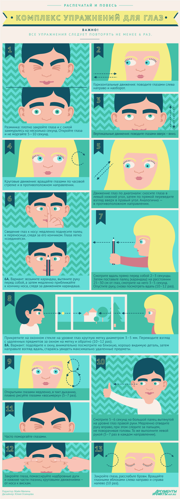

Зарядка для глаз
Оторвитесь от компьютера! 13 упражнений для глаз против усталости
Среди окулистов уже утвердился термин «синдром компьютерного зрения», которым страдают до 70 % пользователей компьютера. Зрение неминуемо будет ухудшаться, если не помогать глазам бороться с усталостью.
Существует множество комплексов компенсирующих упражнений, все из которых полезны. Мы собрали 13 лучших упражнений для глаз, которые можно выполнять в офисе прямо на рабочем месте, дома или на улице.
1. Для разминки: плотно закройте глаза и с силой зажмурьтесь на несколько секунд. Откройте глаза и не моргайте секунд 5–10.
2. Горизонтальные движения глаз слева направо и наоборот.
3. Вертикальные движения глазами вверх-вниз.
4. Круговые движения глазами: по часовой стрелке и в противоположном направлении.
5. Движение глаз по диагонали. Сначала нужно скосить глаза в левый нижний угол, затем по прямой перевести взгляд вверх в правый угол. Аналогично в противоположном направлении.
6. Сведение глаз к носу. Для этого медленно поднесите палец к переносице, следя за его кончиком. Глаза легко «соединятся».
Вариант:
Взять карандаш, вытянуть руку перед собой, а затем медленно приближать к кончику носа, следя за движением карандаша.
7. Посмотрите вдаль прямо перед собой 2–3 секунды. Затем поставьте палец (карандаш) на расстоянии 25–30 см от глаз, смотрите на него 3–5 секунд. Опустите руку, снова посмотрите вдаль. Повторить 10–12 раз.
8. Прикрепите на оконном стекле на уровне глаз круглую метку диаметром 3–5 мм. Переводите взгляд с удалённых предметов за окном на метку и обратно. Повторить 10–12 раз.
Вариант:
Подойдите к окну, внимательно посмотрите на близкую, хорошо видимую деталь, затем направьте взгляд вдаль, стараясь увидеть максимально удалённые предметы.
9. Открытыми глазами медленно, в такт дыханию, плавно рисуйте «восьмёрку». Повторить 5–7 раз.
10. Смотрите 5–6 секунд на большой палец вытянутой на уровне глаз правой руки. Медленно отведите руку вправо, при этом следите за пальцем, не поворачивая головы. То же выполните левой рукой. Повторить 5–7 раз в каждом направлении.
11. Часто поморгайте глазами.
12. Закройте глаза, помассируйте надбровные дуги и нижние части глазниц круговыми движениями – от носа к вискам.
13. Закройте глаза, расслабьте брови. Медленно вращайте глазными яблоками слева направо и справа налево. Повторить 10 раз.
Все упражнения для глаз можно выполнять в представленном порядке или комбинировать.
Но, комбинируя упражнения, важно придерживаться стандартного порядка выполнения любой гимнастики – разминка, основные упражнения, отдых.
Желательно выполнять гимнастику каждый день, а также использовать одно или несколько упражнений для регулярного перерыва во время работы.
В частности, каждый 1–2 часа можно переключаться с работы на рассматривание удалённых от вас предметов, просто закрыть глаза на несколько минут или сделать несколько упражнений для мышц шеи и спины.
Источник: http://www.aif.ru/health/life/44479, Майя Миличь
